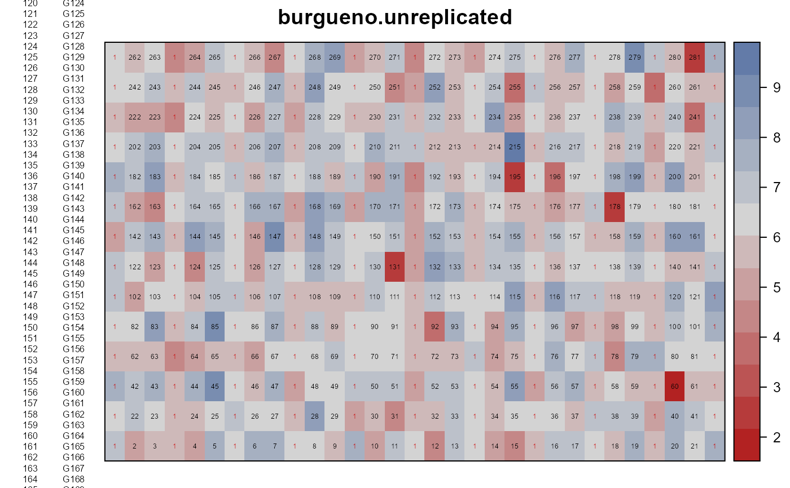
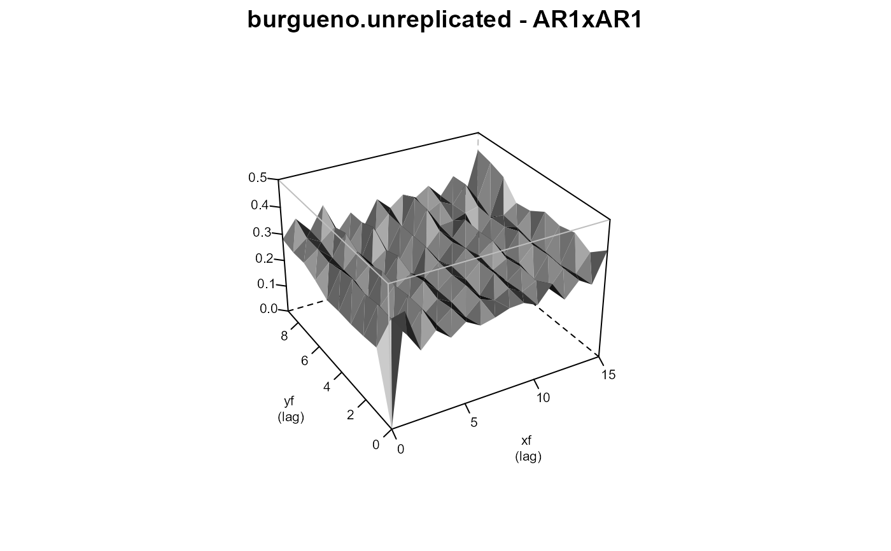
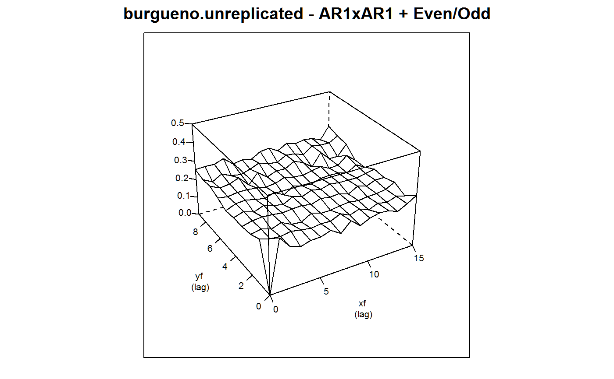

burgueno.unreplicated.RdField experiment with unreplicated genotypes plus one repeated check.
data("burgueno.unreplicated")
A data frame with 434 observations on the following 4 variables.
gengenotype, 281 levels
colcolumn
rowrow
yieldyield, tons/ha
A field experiment with 280 new genotypes. A check genotype is planted in every 4th column.
The plot size is not given.
Electronic version of the data obtained from CropStat software.
Used with permission of Juan Burgueno.
J Burgueno, A Cadena, J Crossa, M Banziger, A Gilmour, B Cullis (2000). User's guide for spatial analysis of field variety trials using ASREML. CIMMYT.
# \dontrun{ library(agridat) data(burgueno.unreplicated) dat <- burgueno.unreplicated # Define a 'check' variable for colors dat$check <- ifelse(dat$gen=="G000", 2, 1) # Every fourth column is the 'check' genotype libs(desplot) desplot(dat, yield ~ col*row, col=check, num=gen, #text=gen, cex=.3, # aspect unknown main="burgueno.unreplicated")libs(asreml,lucid) # asreml4 # AR1 x AR1 with random genotypes dat <- transform(dat, xf=factor(col), yf=factor(row)) dat <- dat[order(dat$xf,dat$yf),] m2 <- asreml(yield ~ 1, data=dat, random = ~ gen, resid = ~ ar1(xf):ar1(yf))#> Model fitted using the gamma parameterization. #> ASReml 4.1.0 Mon Jan 11 17:08:01 2021 #> LogLik Sigma2 DF wall cpu #> 1 -237.568 1.03480 433 17:08:01 0.0 #> 2 -229.545 0.89061 433 17:08:01 0.0 #> 3 -217.471 0.65204 433 17:08:01 0.0 #> 4 -212.727 0.53716 433 17:08:01 0.0 #> 5 -211.786 0.50071 433 17:08:01 0.0 #> 6 -211.729 0.49978 433 17:08:01 0.0 #> 7 -211.725 0.49941 433 17:08:01 0.0 #> 8 -211.724 0.49931 433 17:08:01 0.0vc(m2)#> effect component std.error z.ratio bound %ch #> gen 0.9122 0.127 7.2 P 0 #> xf:yf!R 0.4993 0.05601 8.9 P 0 #> xf:yf!xf!cor -0.243 0.09154 -2.7 U 0.1 #> xf:yf!yf!cor 0.1254 0.07057 1.8 U 0.3## effect component std.error z.ratio bound ## gen 0.9122 0.127 7.2 P 0 ## xf:yf(R) 0.4993 0.05601 8.9 P 0 ## xf:yf!xf!cor -0.2431 0.09156 -2.7 U 0 ## xf:yf!yf!cor 0.1255 0.07057 1.8 U 0.1 # Note the strong saw-tooth pattern in the variogram. Seems to # be column effects. plot(varioGram(m2), xlim=c(0,15), ylim=c(0,9), zlim=c(0,0.5), main="burgueno.unreplicated - AR1xAR1")# libs(lattice) # Show how odd columns are high # bwplot(resid(m2) ~ col, data=dat, horizontal=FALSE) # Define an even/odd column factor as fixed effect # dat$oddcol <- factor(dat$col # The modulus operator throws a bug, so do it the hard way. dat$oddcol <- factor(dat$col - floor(dat$col / 2) *2 ) m3 <- update(m2, yield ~ 1 + oddcol)#> Model fitted using the gamma parameterization. #> ASReml 4.1.0 Mon Jan 11 17:08:01 2021 #> LogLik Sigma2 DF wall cpu #> 1 -202.465 0.474601 432 17:08:01 0.0 #> 2 -200.994 0.451132 432 17:08:01 0.0 #> 3 -199.872 0.429339 432 17:08:01 0.0 (1 restrained) #> 4 -199.582 0.423518 432 17:08:01 0.0 #> 5 -199.519 0.420714 432 17:08:01 0.0 #> 6 -199.518 0.421386 432 17:08:01 0.0#> Warning: Some components changed by more than 1% on the last iteration.m3$loglik # Matches Burgueno table 3, line 3#> [1] -199.5175plot(varioGram(m3), xlim=c(0,15), ylim=c(0,9), zlim=c(0,0.5), main="burgueno.unreplicated - AR1xAR1 + Even/Odd")# Much better-looking variogram # }